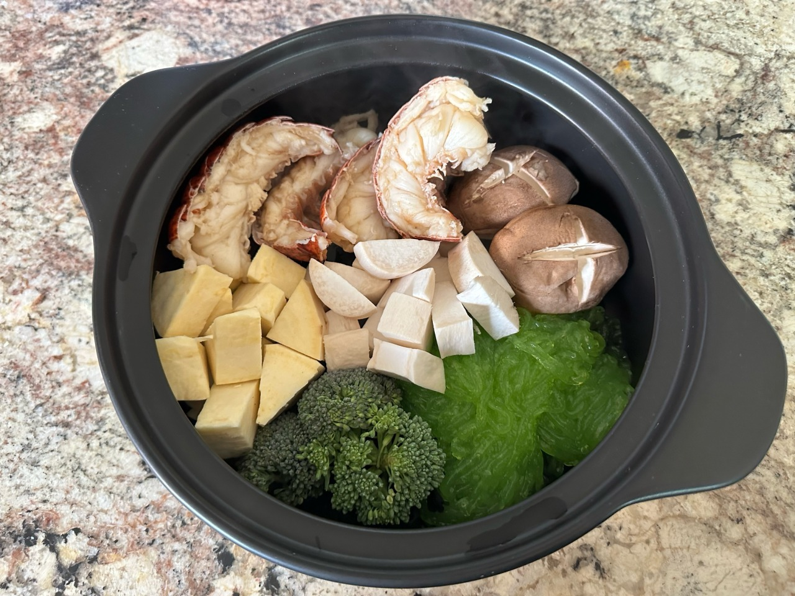

Caldeirada de escorpião e cogumelo ambulante

Ingredientes
- Escorpião gigante
- Cogumelo ambulante
- Pé de cogumelo
- Algas
- Taro
- Slime seco
- Água
- 1 un.
- 1 un.
- 2 un.
- a gosto
- 5 un.
- a gosto
- o necessário
Modo de preparo
- Cortar fora a cabeça, as garras e a cauda do escorpião gigante;
- Fatiar o corpo do escorpião para facilitar o cozimento, preservando o suco;
- Retirar os órgãos internos do escorpião;
- Adicionar o escorpião e o cogumelo a uma panela fervente;
- Fatiar o slime seco em tiras finas;
- Descascar e cortar o taro;
- Adicionar o slime, o taro e as algas à panela;
- Fechar a panela e deixar cozinhando até que fique pronto.
Feedback
O que você achou da receita? Amaríamos receber seu feedback!